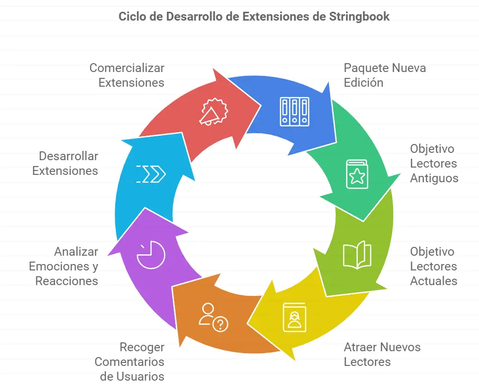

Mercado, Marketing e Ingresos / Comercialización y eCommerce
Comercialización del Selbook
Canales de venta
💡 Hay que tener en cuenta que el Modelo de Negocio se basa en un Marketplace, es decir, el Selbook es la plataforma o “Sporte vital” de un Stringbook (Ej. Kindle de Amazon), pero los Stringbook serán obras de terceros que se venderán en La Librería. Existirán Autores bajo el Sello Nativo de SelBook y otros autores que publicarán sus obras bajo un sello externo (Editorial o proyecto propio). La Librería, por lo tanto, es la plataforma que pondrá en contacto a Lectores y Autores.
La Organización Selbook cobrará el 50% en Royalties sobre el Precio en cualquiera de las vías de financiación de Venta Directa de Stringbooks y Publicidad de Emplazamiento. Con esta fórmula se pretende
incentivar a que los autores opten por el sello nativo dado que su margen será mayor que si trabajan con una Editorial Externa.
Existirán 3 fórmulas de Venta:
Clic aquí para ver un recordatorio de estos dos importantes conceptos…
1️⃣ Venta del Producto Mínimo de Entrada: Modelo Razor & Blade
El requisito indispensable para el uso del Selbook es el dispositivo BIC. La tablet puede eliminarse de la ecuación o ser opcional siempre que se desarrolle una Aplicación lo suficientemente consistente para correr en cualquier dispositivo del cliente (tablet, smartphone y PC).
El margen que se genere en este caso debería ser mínimo dado que el BIC es un dispositivo de alto precio, por lo que podríamos estar hablando de un Modelo Razor & Blade (Bait & Hook), es decir, el beneficio real se obtiene de los “consumibles” (stringbooks).
El dispositivo de Entrada consistirá en un Kit compuesto por BIC básico, una tablet más un Stringbook de iniciación, con limitaciones en Dimensiones, Rutas y Prestaciones. Su precio deberá ser accesible a todos los públicos.
A partir de ahí, el Cliente Potencial dispondrá de variaciones sobre estas opciones, elevando el precio en función del dispositivo y de las Ampliaciones y Prestaciones.
En Cuanto a Dispositivos, las opciones serían:
Mayor número de Canales
que definen la sensibilidad del BIC y el número de emociones y reacciones que es capaz de detectar.
Dispositivo Integrado
Que consistiría en unas Gafas de Realidad Mixta, con el BIC y el Audio integrado.
Estas Opciones sería las que mayor diferencia de precio marcaría respecto al Producto Mínimo de Entrada.
2️⃣ Venta de Stringbooks
Para usuarios que ya han adquirido el dispositivo BIC, los Stringbooks se ofrecerán como la compra de libros más tradicionales, pero con la posibilidad de adquirir diferentes “Versiones” del Stringbooks con un sistema creciente de de Ampliaciones y Prestaciones, llegando al “Full Experience” que consistirá en el Stringbook con todas las ampliaciones y prestaciones existentes.
Venta de Stringbook personalizado
Por otro lado, también se ofrecerá al usuario la posibilidad de crear su stringbook a medida, modificando el número de Nudos, Dimensiones y marcando las diferentes prestaciones que eligiera. En función de esa configuración personalizada, se calcularía el precio final del StringBook:
3️⃣ Venta de Ampliaciones y Prestaciones (Modelo DLC)
Este modelo se basa en el DLC o Venta por Descarga, donde el usuario que ya dispone de un Stringbook podrá adquirir contenidos extras de esas novelas. Los contenidos a comprar son las Ampliaciones y Prestaciones que hemos visto.
El precio de estos extras deberá ser proporcional al del Selbook.
Lo normal es que un Usuario Medio adquiera un Stringbook con limitaciones. A lo largo de su experiencia, se le propondrá u ofrecerá la posibilidad de adquirir funciones extras.
A través de funciones especiales como la "Ventana Inter-Dimensional" o el "Aviso de Encrucijadas", el usuario tendrá tentaciones de ampliar su experiencia y podrá hacerlo en línea, sin salir del Stringbook. Podrá desbloquear una dimensión, un nudo, el Ready-to-Play, etc. El coste deberá ser aceptable y tentador.
Clic para abrir recordatorio
🔄 Versiones y Actualizaciones
Una de las cosas interesantes en este nuevo modelo literario es que el Autor y/o la Editorial pueden paquetizar un Strinbook inicial, con diferentes Ampliaciones y Prestaciones, pero su desarrollo no tiene por qué acabar ahí. Tanto el equipo Creativo como Editorial pueden seguir trabajando en extensiones (versiones) a ese paquete.
Por ejemplo, imaginemos el Señor de los Anillos. Su paquete inicial podría ser dos dimensiones (Frodo y Aragorn), con un total de 10 nudos y algún Relato Paralelo. Con el tiempo, sus “nuevas ediciones” pueden contemplar otras dimensiones (Gandalf, Gollum), personajes tangenciales (la historia de Aragorn), Relatos Paralelos (la creación del anillo único), nuevos Nudos, nuevos pasajes Ready-to-Play, etc. De esta forma, aún con el libro ya publicado, el autor puede seguir dando vida a la obra, generar ingresos extras por la venta de ampliaciones y, por lo tanto, alargar la vida útil del producto.
En la Actualidad, cuando un lector compra un libro, lo lee y se acaba el beneficio en todos los factores económicos (Creador, Editorial, Vendedor y comprador).
La siguiente acción que suele realizarse es la “revitalización” de su venta, a través de los típicos mensajes de “Nueva Edición”, “34 Ediciones”, que lo que pretende es fomentar la compra de Nuevos Lectores, pero la obra es la misma. Nada ha cambiado.
Con este modelo, la promoción es más potente y atractiva, pudiendo ser “Paquetizada” como “Nueva Edición con 2 dimensiones extras, 4 nuevos nudos, 3 pasajes Ready to play y la opción de Charlar con Personajes”.

Este tipo de Paquetes es susceptible de compra tanto por lectores antiguos que ya han terminado la historia y les gustaría “vivir nuevas experiencias”, pero también es de interés a los lectores actuales y, sobre todo, agita el mercado de los nuevos lectores.
De hecho, una acción muy interesante será la consulta al usuario sobre la creación de estas extensiones, haciendo así partícipe al lector de la ampliación y construcción de extensiones. Por medio de la valoración al final del libro, campañas en redes y otro tipo de consultas se podrá testar el interés real en según que tipo de extensiones.
💡
Pero más interesante será conocer las emociones y reacciones del Usuario a lo largo de su experiencia. De un análisis profundo de estas puede inferirse la posible demanda de estas extensiones y actualizaciones, siendo en sí mismo un Estudio de Mercado muy potente en el que apoyarse para realizar, no sólo según que otros Stringbooks, sino de ampliar los existentes, creando una estructura de Ciclo alargando de esta manera la vida útil del Stringbook.